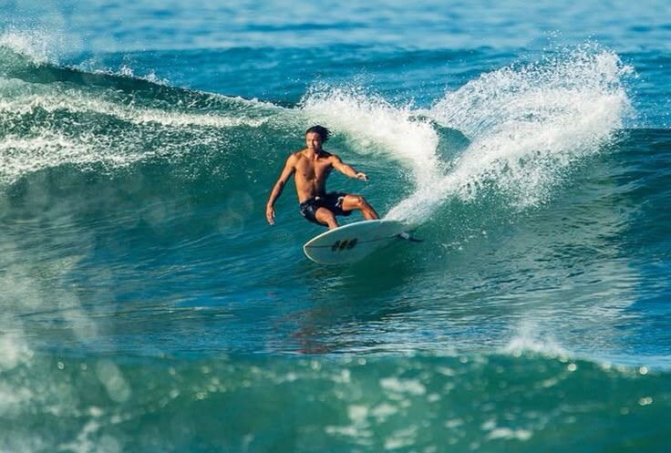
SURF LEGENDARIO
Experiencias 100% Salvadoreñas
Explora lo mejor de nuestra costa, desde olas legendarias hasta la calidez de nuestra gente y gastronomía.

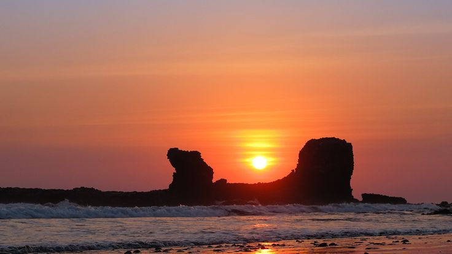
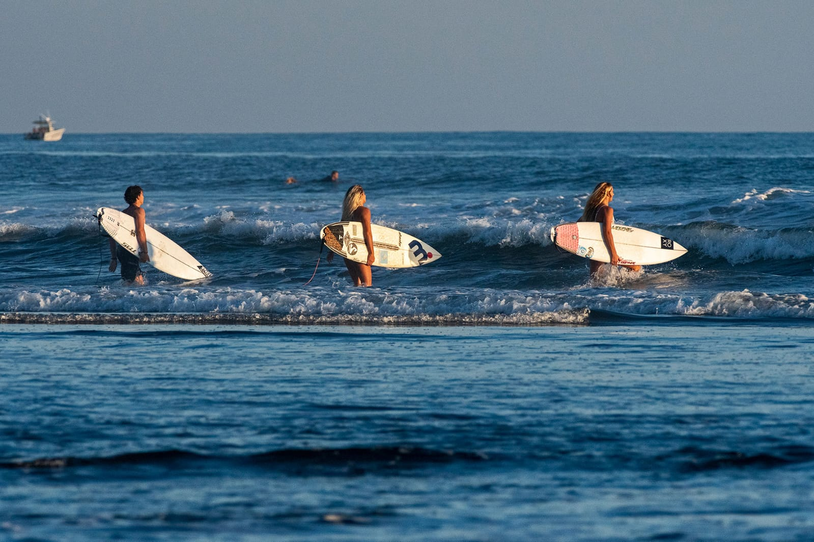
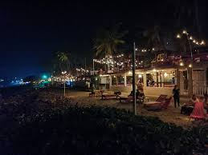
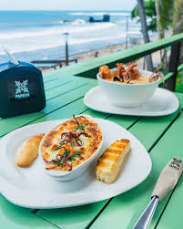
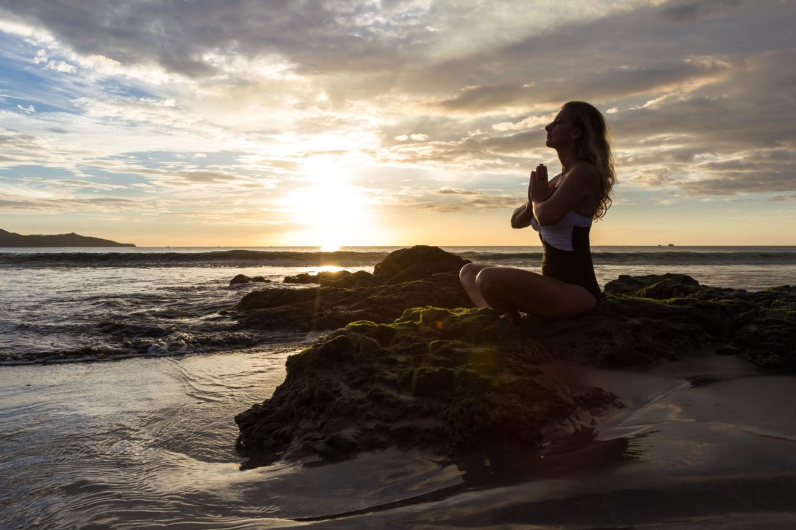
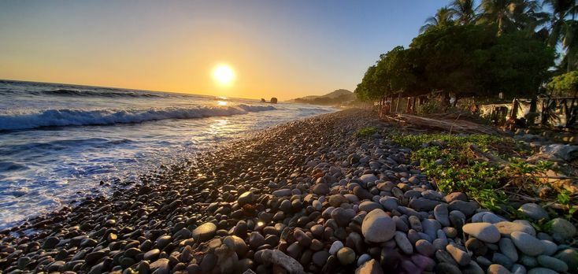
Aprende con los mejores en la playa más famosa del país. Olas perfectas los 365 días del año.
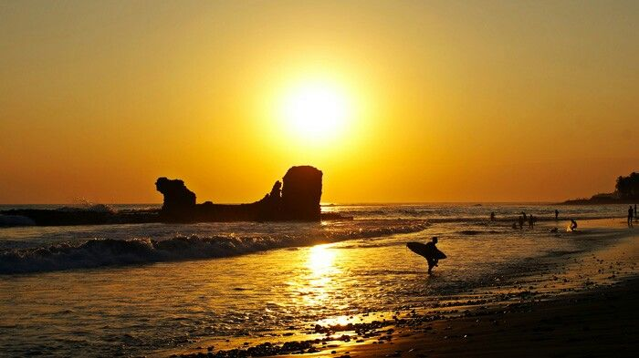
El ritual sagrado frente a la Piedra del Tunco. Un espectáculo gratuito de la naturaleza salvadoreña.
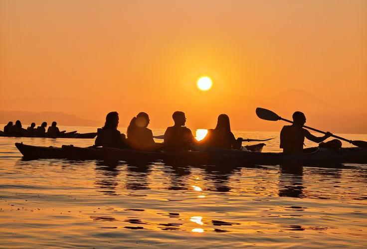
Pesca artesanal con locales o avistamiento de ballenas y delfines en nuestras costas.
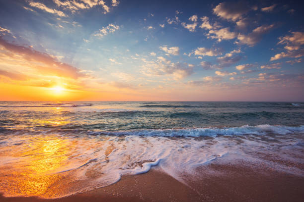
Música en vivo y el mejor ambiente nocturno de la costa de La Libertad.
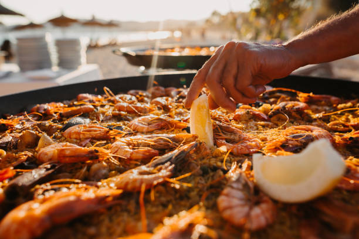
Desde una mariscada fresca hasta las famosas pupusas frente al mar.
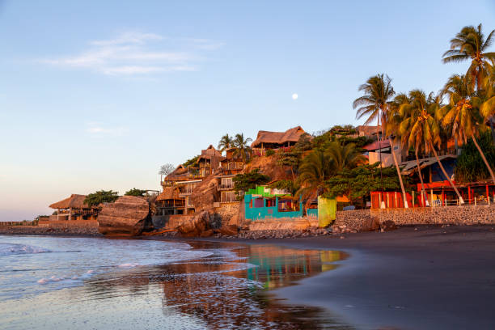
Explora los alrededores: desde el Parque Walter Thilo Deininger hasta el muelle de La Libertad.